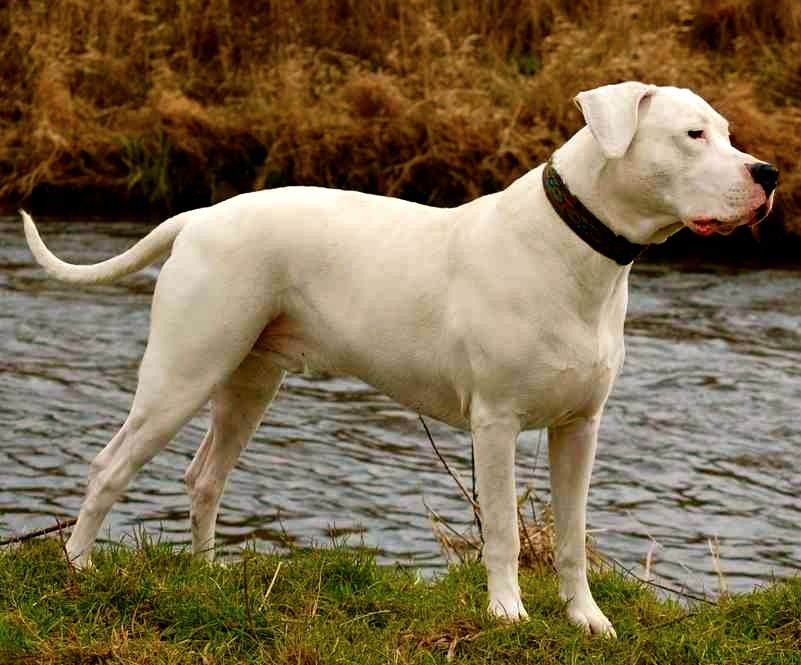
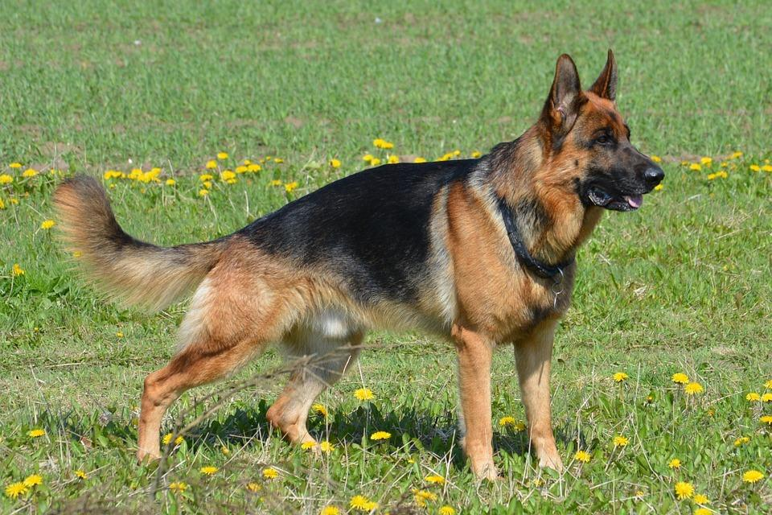

|  |
Dogo ArgentinoA pesar de su pasado como perro de pelea y perro de caza, el dogo argentino es una muestra más de que la educación que le ofrezcamos a nuestro perro va a contribuir enormemente a fijar un carácter apropiado para una vida en familia. El dogo argentino es un perro afectuoso y leal, ciertamente protector pero tolerante con otros perros y personas si se le ofrece la socialización apropiada.
Sin embargo, el dogo argentino no es un perro apropiado para todo el mundo. Su gran inteligencia hace que se aburra con cierta facilidad y por ello necesita una persona experimentada en la tenencia responsable de animales, en la educación y adiestramiento y en la correcta motivación del perro para ofrecerle nuevas experiencias y actividades positivas. También necesitará una familia dinámica que comprenda las necesidades de este perro y que se amolde a un estilo de vida proactivo. |

|
Pit Bull Terrieres una raza de perro que ha pasado por momentos donde ha sido un can muy querido, pero también denostado debido a la estigmatización que ha tenido por sus características físicas, sobre todo, por algunas pautas de comportamiento. Pero lo cierto es que es un can con un gran potencial como animal de compañía si se le educa de manera correcta y se colman sus necesidades. Al igual que ha ocurrido en otros tiempos con varias razas como el dóberman o el pastor alemán, el pitbull también es considerado un perro peligroso, pero no es esta precisamente una de sus particularidades. La educación que se le dé será la que marque la diferencia entre tener un perro agresivo y uno obediente y social, precisamente dos de las actitudes que distinguen esta raza.
Aunque en su origen el pitbull fue creado como perro de pelea, con el paso de los años esta función ha quedado totalmente relegada. Se utiliza actualmente como perro de trabajo policial detectando narcóticos o como perro de terapia y de rescate. Su personalidad es fuerte, de ideas fijas y aún con un impulso de presa desarrollado. Son perros amigables, por eso no son buenos guardianes, y con un carácter más estable que el promedio de los canes. Es protector y excelente para quienes puedan dedicarle tiempo, porque es una de las razas que más padece ansiedad por separación. Necesita una educación estricta y la responsabilidad que exige tener un animal en casa. |
|  |
Pastor alemanEl perro Pastor Alemán es un compañero de familia cariñoso, leal y de buen carácter que ama a los niños. Les encanta complacer y son fáciles de entrenar, por lo que a menudo se les utiliza como perros policía, perros de servicio, de agilidad, de obediencia y centinelas. Aunque el Pastor Alemán es una raza adorable, no demuestra su cariño tan fácilmente, son perros de "un solo hombre" porque muestran una enorme lealtad hacia su dueño o cuidador principal. Por ser una raza fuerte y poderosa, es importante socializar a los cachorros con los niños, para asegurar que se conviertan en buenos miembros de la familia. Al ser una raza activa, el Pastor Alemán requiere ejercicio físico y mental. Tiende a ser bueno con actividades como la agilidad, el pastoreo, el rastreo y el buceo.
El carácter del pastor alemán es equilibrado, seguro y confiable. El coraje de estos perros es legendario, lo mismo que su instinto de defensa. Es por esto que el pastor alemán es uno de los perros más solicitados para la guardia y protección, ya que tiene una predisposición natural para estas tareas. Pero coraje y defensa no son lo mismo que agresividad y peligro. Aunque el pastor alemán tiende a ser un tanto desconfiado con los extraños, no es un perro agresivo por naturaleza. Al contrario, tiende a estar alerta pero no ataca sin razón. Por supuesto, la socialización del cachorro es fundamental para evitar problemas en el futuro, ya que ningún perro tiene el carácter asegurado solamente por sus genes. El pastor alemán es un perro fácil de entrenar y se adapta muy bien a cualquier técnica de adiestramiento. Sin embargo, alcanza todo su potencial cuando se lo entrena aprovechando el refuerzo positivo. |